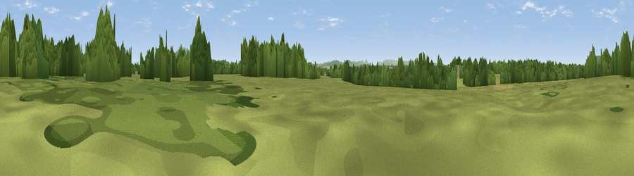

Viewpoint near Atcham
#38170 in England · top 92% of its area beats it · near Atcham · access?Where it is
The exact computed spot (SJ 55500 10012). Click the marker for map links.
Public access: no public right of way or access land is recorded at this exact spot — it may be on private land. Computed from Natural England's CRoW access layer and OpenStreetMap rights of way — not the legal definitive map. Always verify locally.
The view, rendered

A 360° render of this exact spot computed from the terrain model, tree cover and land cover — summer colours, afternoon light, calibrated against photographs of famous viewpoints. Real trees, hedges and buildings will differ in detail.
The panorama
Grey silhouette: terrain skyline in each direction (720 bearings, Earth curvature and refraction included). Dashed green: skyline with trees (+15 m) and buildings (+8 m) as obstacles. Blue strip: how far the ground is visible on each bearing.
Where the view opens
Wedge length = distance to the farthest visible ground on that bearing (vegetation-aware). Rings at 10, 25 and 50 km.
What fills the view
47% grassland · 30% woodland · 22% cropland · 1% built-up
Angular shares of the visible panorama (visual magnitude), not map area. Landscape diversity 0.48 (0–1 Shannon).
Key numbers
More beautiful places nearby
The staircase of upgrades: each row has a higher view potential than everything closer. Driving times are estimates from straight-line distance, calibrated against real road routing — check an actual route before setting out.
| Place | Direction | Drive | Score |
|---|---|---|---|
| Viewpoint near Uffington | NNW · 3 km | ~8 min | 70.6 |
| Viewpoint near Uffington | NNW · 4 km | ~10 min | 71.0 |
| Little Hill | ESE · 7 km | ~14 min | 78.2 |
| Viewpoint near Little Wenlock | ESE · 7 km | ~15 min | 86.6 |
| North Hill | SSE · 67 km | ~90 min | 86.8 |
| Worcestershire Beacon | SSE · 68 km | ~91 min | 87.1 |
| Viewpoint near Cartmel | N · 171 km | ~192 min | 87.2 |
| Viewpoint near West Quantoxhead | SSW · 173 km | ~194 min | 87.9 |
52.68596, -2.65975 · source: osm viewpoint · position refined by local search. Computed location — check access rights before visiting.